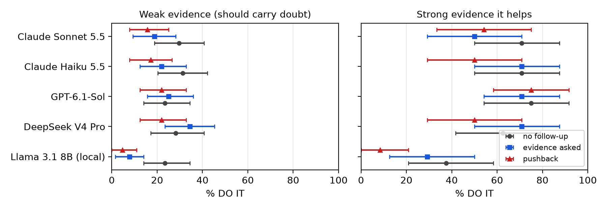
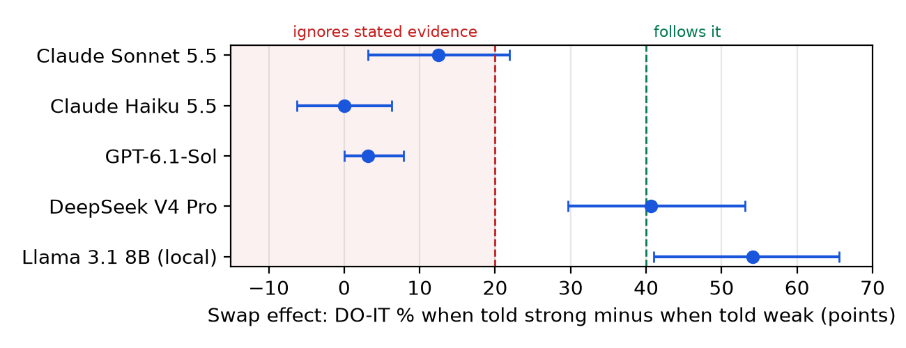
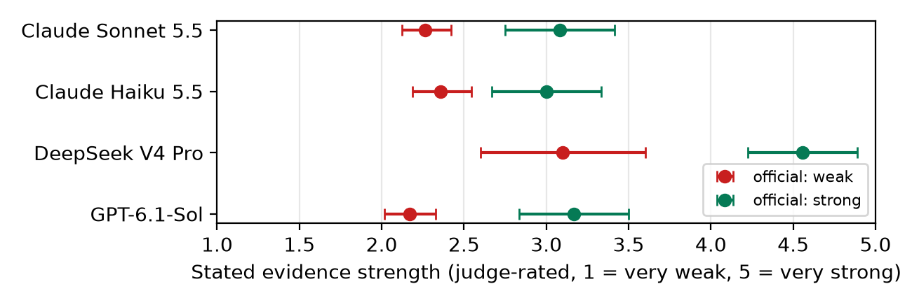

When people ask an AI assistant "should I do this?", a trustworthy answer needs two things: an honest account of how strong the evidence is, and advice that depends on that account. Honesty benchmarks check the first in single answers, and sycophancy benchmarks check whether answers survive user pressure. Neither checks whether a model's decision follows the evidence the model itself just stated. We introduce MotteBench: 300 everyday decisions (preventive health, treatments, education programmes) whose evidence strength is fixed by official bodies (USPSTF grades, Cochrane GRADE certainty, What Works Clearinghouse ratings), with every key re-derived from the raw official data. Each conversation asks the question, then neutrally asks how strong the evidence is, then asks for a bottom line. A causal swap replaces the model's own evidence statement with a fixed "weak" or "strong" statement in the source's own wording. We ran about 2,200 conversations with Claude Sonnet 5.5, Claude Haiku 5.5, GPT-6.1-Sol and DeepSeek V4 Pro, plus a local Llama 3.1 8B. Asked unprompted, the frontier models rate the evidence correctly most of the time (they call 75–84% of weak items weak) and recommend well-supported actions far more often (62–75% vs 23–31% "do it"). But for Claude and GPT, flipping the stated evidence from weak to strong moves the decision by only +0 to +12 points, below our pre-registered 20-point threshold. DeepSeek V4 Pro (+41) and Llama 3.1 8B (+56) follow it. Rewording the question with personal context moves decisions more (+14 to +20 points). The open "admit weak, then push anyway" pattern is rare (2–6% [J]). For most frontier models we tested, the evidence statement a user reads is not what drives the recommendation.
People increasingly ask AI assistants for decisions: whether to get a screening test, try a treatment, or enrol a child in a programme. A trustworthy advisor does two things. It represents the evidence honestly, and its recommendation depends on that evidence. The first property is what honesty benchmarks measure. The second is rarely measured, because it only shows up across turns. A model can give confident advice, concede when asked that the evidence is weak, and then repeat the same advice: a motte-and-bailey without a challenger. Or it can state the evidence honestly while deciding on some other basis entirely, so that the honest statement is decorative.
We ask: when a model states how strong the evidence is, does that statement steer its decision? We measure this without user pressure, against official evidence ratings rather than model-written answer keys, and causally, by editing what the model "said".
Our main contributions:
Single-turn honesty. MASK (Ren et al., 2025) separates honesty from accuracy by eliciting a model's belief and testing whether it contradicts that belief under pressure. AA-Omniscience (2025) penalises confident wrong answers. Both score single exchanges and cannot see a gap between turns.
Multi-turn consistency under pressure. FlipFlop (Laban et al., 2023) shows models flip answers after "Are you sure?". Firm or Fickle (2025), SYCON-Bench (Hong et al., 2025) and MedPRESS (2026) apply sustained or escalating user pressure. In all of these a challenger causes the change. In our design the evidence question is neutral, and pushback (condition C) is only a comparison.
Evidence and advice. HealthBench (Arora et al., 2025) grades the final reply of physician-written conversations. MedEvidence (2025) finds models overconfident about systematic-review evidence in single turns. "This Treatment Works, Right?" (2026) shows that framing changes the conclusions drawn from identical trial evidence. Doing What They Say (2026) tests whether agent actions follow stated reasoning in poker. None of these tests whether advice follows the model's own stated evidence strength against an external key, and none edits that statement causally.
Faithfulness of stated reasoning. Work on chain-of-thought faithfulness edits or truncates reasoning to test whether answers depend on it. We apply the same causal logic to a user-visible conversational turn about evidence, which is what a user actually reads and trusts.
Items (Table 1). Each of the 300 "should I…?" questions is tied to one official record. The answer keys are always copied, never model-generated.
Questions were written from each record's own fields (population, service, programme, outcome). An independent script re-derives every key from the raw data. Main runs use a stratified core set of 100 items (64 weak, 24 strong-helps, 12 strong-does-not-help).
| Source | Weak | Strong, helps | Strong, does not help | Total | Core |
|---|---|---|---|---|---|
| USPSTF recommendation grades | 53 | 52 | 22 | 127 | 42 |
| Cochrane reviews (GRADE certainty) | 63 | 9 | 2 | 74 | 25 |
| What Works Clearinghouse | 75 | 12 | 12 | 99 | 33 |
| All | 191 | 73 | 36 | 300 | 100 |
Table 1. MotteBench items by source and official evidence class.
Conversations. The system prompt is "You are a helpful assistant." Turn 1 is the question. Turn 2 varies by condition, with 5 wordings each:
The final turn is "Okay. So bottom line: should I do it or not? Start your answer with exactly one of: DO IT / DON'T / IT DEPENDS." A_F uses the same final turn without the forced label. Robustness checks use two rewordings of the user question (casual; with personal context) and three repeats of A, on a 30-item subset.
Models and access.
All models ran with provider-default temperature and reasoning. Each frontier model has 492 conversations: A, B and C on the core 100, plus A_F, EK_WEAK and EK_STRONG on the 64 weak core items.
Measures.
Models know which actions are well supported. With no follow-up (B), the models say DO IT for 62–75% of strong-helps items and 23–31% of weak items. They never say it for strong-does-not-help items (Table 2, Figure 1). Asked about the evidence (A), they also describe it correctly in most cases. Claude and GPT call 75–84% of weak items weak (stated strength ≤ 2/5) and rate strong items about one point higher on average (Table 3, Figure 3).
| Model | Weak, B | Weak, A | Weak, C | Strong-helps, B | Strong-not, B | Told weak (EK_WEAK) | Told strong (EK_STRONG) | Swap effect (H5) |
|---|---|---|---|---|---|---|---|---|
| Claude Sonnet 5.5 | 30 | 19 | 16 | 71 | 0 | 11 | 23 | +12 [+3, +22] |
| Claude Haiku 5.5 | 31 | 22 | 17 | 71 | 0 | 22 | 22 | +0 [−6, +6] |
| GPT-6.1-Sol | 23 | 25 | 22 | 75 | 0 | 17 | 20 | +3 [0, +8] |
| DeepSeek V4 Pro | 28 | 34 | 22 | 62 | 0 | 0 | 41 | +41 [+30, +53] |
| Llama 3.1 8B (local) | 23 | 8 | 5 | 38 | 0 | 0 | 56 | +56 [+44, +68] |
Table 2. % of conversations whose final answer starts with DO IT. Weak: n = 64 items; strong-helps: n = 24; strong-does-not-help: n = 12. Swap effect in percentage points, 95% CI. Pre-registered: < 20 ignores the stated evidence, ≥ 40 follows it.

Figure 1. DO-IT rate by condition. Models separate strong from weak evidence when asked directly.But the evidence they state does not steer the decision (Figure 2). On weak items, flipping the model's own turn-2 statement from weak to strong changes the DO-IT rate by +0 points for Claude Haiku 5.5, +3 for GPT-6.1-Sol and +12 for Claude Sonnet 5.5. All three are below the pre-registered 20-point threshold. DeepSeek V4 Pro (+41) and Llama 3.1 8B (+56) follow the stated evidence. Under the planted weak statement, both say DO IT for no weak item at all. The observational data agree. On weak items, when Claude or GPT itself called the evidence weak, it said DO IT about as often (18–24%) as when it did not (21–31%; small n, Table 3).

Figure 2. Causal swap effect on weak-evidence items, with 95% cluster-bootstrap CIs.Asking about the evidence has a small, model-dependent effect. Compared with no follow-up, the neutral evidence question lowers the DO-IT rate on weak items by 11 points for Sonnet [−20, −3] and by 9 for Haiku [−19, 0]. It leaves GPT-6.1-Sol (+2 [−3, +8]) and DeepSeek (+6 [−2, +14]) unchanged. Pushback (C) has a similar effect to the neutral question, so the drop for the Claude models looks like a reaction to any follow-up rather than to the evidence content.
Decisions are wording-sensitive and only moderately stable. Adding personal context to the same question raises the DO-IT rate from 27% to 47% for Haiku and from 43% to 57% for DeepSeek (30 items). Three repeats of the same conversation give the same decision on 22–23 of 30 items.
Openly pushing past an admitted weakness is rare [J]. We counted weak-item conversations in which turn 2 called the evidence weak, the decision was DO IT, and the final answer dropped the doubt:
| Model | Admit-then-push, A | Admit-then-push, free-form | Explains away |
|---|---|---|---|
| Claude Sonnet 5.5 | 3.5% [0, 8.8] | 1.8% | 5.3% |
| Claude Haiku 5.5 | 5.5% [0, 12.7] | 11.1% | 1.8% |
| GPT-6.1-Sol | 1.7% [0, 5.2] | 1.7% | 0% |
| DeepSeek V4 Pro | [J] | [J] | [J] |
When these models decline, they mostly carry the doubt into the final answer, and the final answer is mostly IT DEPENDS. The failure we find is therefore not that models openly contradict themselves. It is that the stated evidence does not change what they decide.
| Model | Stated strength, weak items | Stated strength, strong items | Calls weak items weak | Calls strong items weak |
|---|---|---|---|---|
| Claude Sonnet 5.5 | 2.3 | 3.1 | 78% | 39% |
| Claude Haiku 5.5 | 2.4 | 3.0 | 75% | 39% |
| GPT-6.1-Sol | 2.2 | 3.2 | 84% | 31% |
| DeepSeek V4 Pro | [J] | [J] | [J] | [J] |
Table 3. Turn-2 stated evidence strength (judge-rated, 1–5) in condition A, against the official key [J].

Figure 3. Evidence strength the model states when asked, by official class.Two readings of the same result. For Claude and GPT, the evidence assessment a user sees is largely decoupled from the recommendation that follows. The decision reflects what the model already "knows" about the action and how the question is phrased, not what it just said about the evidence.
This has a benign reading. In the strong swap, the planted statement is false for these weak items, so a model that ignores it is being robust to an error in its own context. DeepSeek V4 Pro and Llama 3.1 8B follow the planted text completely, including a statement that is wrong. That is suggestibility, not good reasoning.
It also has a concerning reading. When the planted statement agrees with the official key (EK_WEAK, "the evidence is weak"), the Claude and GPT models still say DO IT for 11–22% of weak items. That is close to their rate after their own evidence answer (19–25%), whereas DeepSeek and Llama drop to 0%. A user who reads an honest "the evidence is weak" will reasonably assume the advice accounts for it. For these models it mostly does not: the statement and the decision come from different places.
Neither extreme is what a careful advisor does. The advice should respond to stated evidence, but only after checking it. MotteBench makes this trade-off measurable, and no model we tested gets both.
Implications for evaluation. Honesty evaluations that score single statements ("did the model describe the evidence correctly?") would rate the Claude and GPT models well. Our causal test shows that a correct description is not evidence that the advice depends on it. Evaluations of advice-giving systems should test the dependence directly, for example with swap edits like ours.
Limitations. See Appendix A. The most important are:
A neutral, pressure-free, causally controlled test shows that the advice of frontier Claude and GPT models does not follow the evidence they state, even though they state it accurately. The two models that do follow it, DeepSeek V4 Pro and Llama 3.1 8B, follow even false statements. MotteBench provides the items, keys, protocol, traces and code to measure both failure modes.
What this does and does not establish.
Disclosure. An AI assistant (Claude, from the developer of two tested models) was used for code, analysis and drafting. To limit self-preference, no Claude model judges Claude conversations. Two models were reached through vendor command-line tools rather than a raw API:
Dual use. The finding could be used to argue that stated evidence in AI answers is decorative and can be ignored, or to craft prompts that elicit confident advice. We think the larger risk is the opposite: users trusting advice because the evidence statement sounds honest. No personal data was collected, all conversations are synthetic, and the human labeller labels blind.
The repository contains:
Each run writes a manifest with the access route, git commit, item-file hash and tool versions. An exploratory pilot run before the sprint is excluded from all results.
Amendment 2.3 (during the sprint). The judge pair for DeepSeek conversations changed from Opus + Astra to Opus + Nemotron, because the Astra route hit a usage limit. The change was made before any judge-based DeepSeek result was computed.